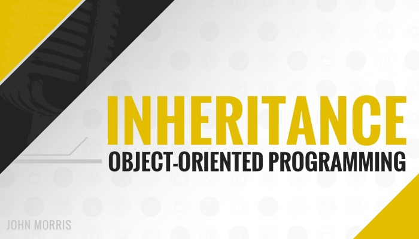

Inheritance (Part 1)
💁Sau 2 tính chất đầu tiên trong OOP là tính đóng gói, tính trừu tượng, Main Code xin giới thiệu mọi người tới tính chất thứ 3 của OOP là Tính Kế Thừa (Inheritance):
💁Tính kế thừa trong Java
🔰Tính kế thừa trong Java là một cơ chế trong đó một đối tượng có được tất cả các thuộc tính và hành vi của một đối tượng cha. Đây là một phần quan trọng của OOPs (Hệ thống lập trình hướng đối tượng).
🔰Ý tưởng đằng sau tính kế thừa trong Java là việc bạn có thể tạo các class mới được dựa trên các class đã có sẵn. Khi bạn kế thừa từ một class có sẵn, bạn có thể tái sử dụng các phương thức và trường của class cha. Hơn nữa, bạn có thể thêm các phương thức và trường mới trong class hiện tại.
Tính kế thừa thể hiện quan hệ IS-A, còn gọi là quan hệ cha-con.
👨💻Tại sao nên sử dụng tính kế thừa trong Java?
- Để thực hiện Ghi đè phương thức (nhờ thế mà có thể đạt được tính đa hình trong runtime).
- Để tái sử dụng code.
👨💻Các thuật ngữ
- Class: Class là một tập hợp các đối tượng có chung tính chất. Nó là một bản mẫu hay một bản thiết kế mà từ đó các đối tượng được tạo ra.
- Class con (Sub class/Child class): Class con là một class kế thừa từ class khác. Một số thuật ngữ khác để gọi class con trong tiếng Anh là “derived class”, “extended class”, hay “child class”.
- Class cha (Super class/Parent class): Class cha là class được class con kế thừa. Một số thuật ngữ khác để gọi class cha trong tiếng Anh là “base class” hay “parent class”.
- Tính tái sử dụng: Như tên gọi, tính tái sử dụng là cơ thế cho phép bạn sử dụng lại các trường và phương thức của class hiện tại khi bạn tạo một class mới. Bạn có thể sử dụng cùng trường và phương thức đã được định nghĩa ở class cha.